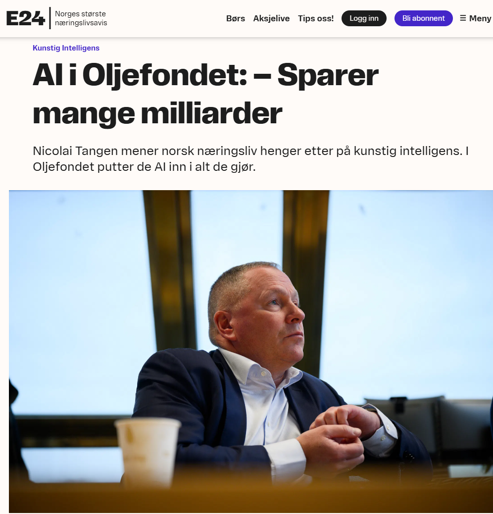
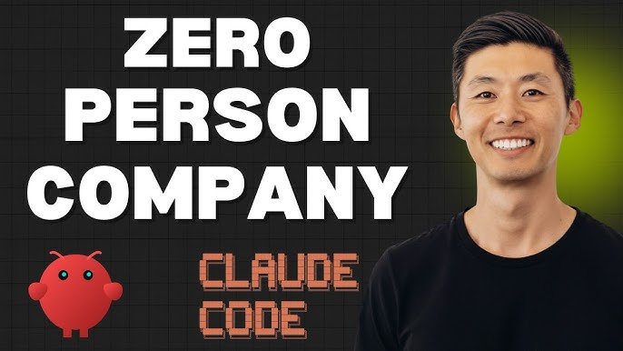
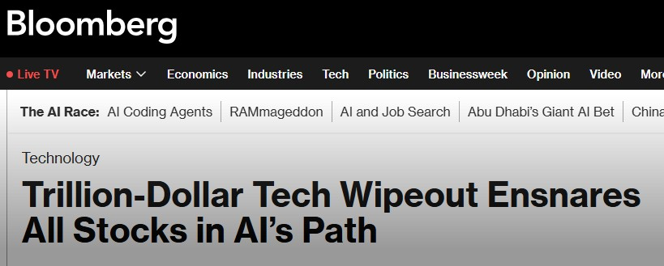
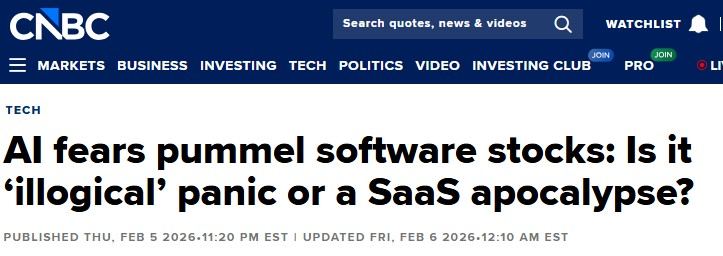
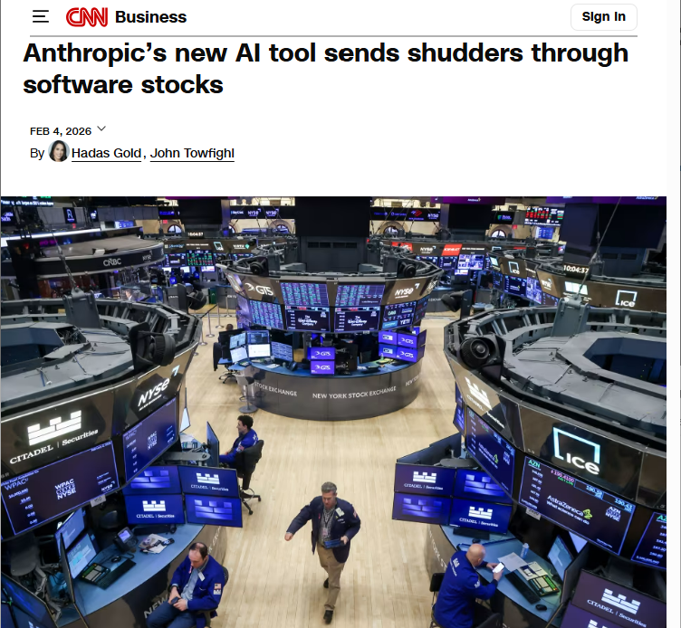

Trykk M for lyd • Pil for neste
Notater — Slide 1: Video
- Åpning: Ikke si noe. La videoen starte. Cathie Wood (ARK Invest) om AI-transformasjon, ca. 1 minutt.
- Etter videoen: "Det var ett år siden. Se hvor vi er nå."
- Overgang: "Og det har bare akselerert siden. La meg vise dere hva som har skjedd de siste 12 månedene."
12 måneder som
endret alt
Notater — Slide 2: 12 måneder som endret alt
- Narrativ: For ett år siden var AI en chatbot du stilte spørsmål til. I dag er det autonome agenter som handler på dine vegne — skriver kode, analyserer data, bygger nettsider, gjør research.
- Cursor: Bloomberg 2. mars 2026 — raskeste SaaS-selskap til $2B ARR noensinne. Gikk fra $1M til $1B til $2B på måneder.
- Dario Amodei (Anthropic CEO, feb 2026): "AI skriver 90% av koden vår. Snart 100%." Anthropic lager Claude — verktøyet dere skal bruke i dag.
- Open source: DeepSeek, Llama 3, Mistral — AI er ikke lenger forbeholdt Big Tech.
- Overgang: "Og den som har sagt dette tydeligst i Norge, er kanskje den siste dere forventer..."
Ett år hos Google.
Én time med AI.
«AI cuts through bureaucracy. It will happily generate a version one.»
Paul Graham
Notater — Slide 3: Ett år vs. én time
- Åpning: "La meg gi dere ett konkret eksempel på hva dette betyr i praksis."
- Google-sitatet: Les det sakte. John Adogin, Principal Engineer hos Google. Ikke en junior-utvikler — en senior ingeniør i verdens mest avanserte tech-selskap. De brukte et helt år. Claude Code brukte en time.
- Nyansering (si muntlig): "Dette er ikke et argument mot planlegging. Det er et signal om at hastigheten på hva som er mulig har endret seg fundamentalt. Det du trodde tok måneder, kan ta timer."
- NHO-kontekst: NHO og elleve av Norges største selskaper signerte forrige uke en intensjonserklæring om KI-satsing. Ambisjonene er helt riktige — vi trenger langsiktig forskning. Men: mens forskning konkretiseres, kan vi allerede teste. Open source-modeller som DeepSeek kjører lokalt på egen infrastruktur. I dag. Med full kontroll.
- Provokasjon: Er vi i ferd med å planlegge en forskningsekspedisjon til Nordpolen mens andre flyr charter dit hver dag?
- Paul Graham: Les sitatet. Kortversjonen: AI venter ikke på godkjenning. Fullsitat for kontekst: "If a big organization is paralyzed by indecision, AI doesn't care. It will happily generate a version one."
- Overgang: "Og den som sier dette tydeligst i Norge, er sjefen for verdens største fond."

Nicolai Tangen, Oljefondet — E24
Notater — Slide 4: Tangen-sitat
- Kontekst: Nicolai Tangen, sjef for verdens største statlige investeringsfond ($1,7 billioner), ga i februar en knallhard beskjed til norsk næringsliv.
- Første sitat: Les opp. La det synke inn. "Seks timer om AI, tolv minutter om rammevilkår." Han snakker om Arendalsuka og norske konferanser generelt — prioriteringene er feil.
- Andre sitat: "Du må gjøre noe selv. Du må putte AI i alt bedriften gjør." Direkte melding: slutt å vente på regulering og politikk. Handle.
- Bakgrunn: Tangen møtte Sam Altman (OpenAI-sjefen) og ble overbevist. Satte 20% produktivitetsmål for hele Oljefondet. Ikke et mål om å kutte folk — et mål om å gjøre mer med AI.
- Overgang: "Og det er ikke bare ord. La meg vise hva de faktisk gjør."
Kilde: E24, "AI i Oljefondet", 16. feb 2026
Oljefondet: Fra ord til handling
Notater — Slide 5: Oljefondet i praksis
- Åpning: "Dette er ikke teori. Oljefondet — verdens største fond — gjør dette allerede."
- 20%-målet: Satt etter at Tangen møtte Sam Altman. Konkret produktivitetsmål for hele organisasjonen.
- 8 AI-agenter: Tar investeringsbeslutninger på sekunder som tidligere tok timer med manuelt analysearbeid. Ikke chatbots — agenter som handler autonomt.
- 56% koder: Over halvparten av de ansatte koder nå. Til sammenligning: Morgan Stanley ligger på 20%. Tangen oppfordrer aktivt alle til å lære.
- 3000 selskapsmøter/år: AI forbereder briefing-dokumenter automatisk. Sparer 2-3 timer per møte.
- Jurister koder: Jurister og kommunikasjonsfolk vibe-koder interne verktøy. Ikke bare tech-avdelingen.
- Nøkkelsitat: "Alle selskaper bør ha en gal person på toppen som aldri slutter å mase om AI." — Si dette høyt.
- Tangen-advarsel (si muntlig): "Teknologien er ofte mer avansert enn det mennesker og selskaper klarer å ta i bruk. Avstanden blir større og større." Han kaller det "technology overhang" — gapet mellom hva AI kan og hva organisasjoner faktisk gjør. Gapet akselererer.
- Overgang: "La oss sette noen tall på dette gapet."
Gapet som vokser
Notater — Slide 7: Gapet som vokser
- Grafen: Se hvordan kurvene spriker. AI-kapabilitet akselererer eksponentielt oppover. Gjennomsnittlig adopsjon kryper. Det røde gapet er risikoen.
- 90% (IDC): 90% av bedrifter vil mangle kritisk AI-kompetanse innen slutten av 2026. $5,5 billioner i inntekter er i fare globalt.
- 7x (OpenAI, Davos jan 2026): Power users bruker 7x mer av AIs avanserte tenke-kapabiliteter enn vanlige brukere. De fleste bruker bare en brøkdel av tilgjengelig kraft. ChatGPTs kapasitet dobles omtrent hver 7. måned.
- Compounding: Early adopters får eksponentielle fordeler. OpenAI advarer: hvis overhangen fortsetter å vokse, vil et lite antall selskaper og land dra fra — vanskelig å reversere.
- Strukturert testing: Ikke jag hvert nytt verktøy. Bygg kultur for regelmessig, systematisk eksperimentering med nye kapabiliteter. Det er organisatorisk absorpsjon — kultur, prosesser, kompetanse — som avgjør, ikke teknologien.
- Nøkkelpoeng: "Gapet er ikke mellom de som bruker AI og de som ikke gjør det. Det er mellom de som bruker det godt, og alle andre."
- Overgang: "Og markedet har allerede begynt å prise dette inn."
Kilder: IDC/Workera, OpenAI "Ending the Capability Overhang" (Davos, jan 2026), Deloitte State of AI 2026
Hva skjer med jobbene?
-
•
IMF: 40% av alle jobber globalt eksponert for AI-disrupsjon
-
•
McKinsey: 12M yrkesskifter i USA innen 2030 — de fleste white-collar
-
•
WEF: AI skaper flere jobber enn den fjerner — hvis folk får opplæring
-
•
PwC: Jobbtallene stiger også i automatiserbare roller
Notater — Slide 11: Hva skjer med jobbene?
- Bloomberg: "White-Collar Workers Are Losing Jobs to AI" - vedvarende oppsigelser i tech, finans, jus
- IMF (Jan 2025): 40% av alle jobber globalt er eksponert for AI
- McKinsey Global Institute: 12 millioner yrkesskifter i USA innen 2030
- Klarna: Kuttet 700, AI gjør jobben til 700 til (CEO Sebastian Siemiatkowski)
- WEF (Jan 2026): 1.1 billion jobs transformed, net positive IF companies invest in reskilling
- PwC AI Jobs Barometer: Job numbers rising even in highly automatable roles
- Tangen/NBIM: "En feil mange selskaper gjør er å si opp folk. Da stopper du utviklingen."
- Poenget: Begge perspektivene er sanne. Utfallet avhenger av hva LEDERE gjør.
Kilder: Bloomberg, IMF, McKinsey, Klarna, WEF, PwC, E24/NBIM
The Era of the Zero Human Company
-
•
FelixCraft: AI-agent som CEO. $78K i inntekt på 30 dager — fire inntektsstrømmer, null ansatte.
-
•
Polsia: Bygger og driver selskaper autonomt for $49/mnd. Fra idé til inntekt — AI håndterer alt.

Notater — Slide 9: Zero Human Company
- Kontekst: Vi har fulgt "tiny teams" lenge — selskaper som Midjourney og Cursor som genererer millioner per ansatt. Men de siste 90 dagene har noe endret seg. Med Claude Code og de nyeste modellene eksperimenterer gründere med helt autonome selskaper.
- FelixCraft: Nat Eliason lanserte FelixCraft for 30 dager siden. Felix er en AI-agent, ikke et menneske. På én måned: $78K i inntekt fra fire strømmer, inkludert en $29-guide om AI-ansettelse og ClawMart (app store for AI-assistenter). Tidlig inntekt kommer fra folk fascinert av selve kategorien.
- Polsia (polsia.com): Ben Serra bygget en plattform som bygger og driver selskaper autonomt for $49/mnd. Du bringer idéen eller lar AI generere én. Plattformen håndterer markedsanalyse, bygger hjemmeside, finner kunder, og kjører daglige sykluser med engineering, markedsføring og drift. 20% rev share — tenk inkubator, ikke SaaS.
- Tallene: Polsia gikk fra lave tusentall til $1,5M run rate siden tidlig februar. FelixCraft: $40K bare siste syv dager. Ikke enhjørninger ennå, men hastigheten er udiskutabel.
- Spørsmålet til salen: Hvilke deler av deres virksomhet kunne kjørt autonomt i dag? Ikke en gang — i dag. Infrastrukturen er her. Modellene er kapable. Eksperimentene er live.
SaaSpocalypse
$2 tusen milliarder slettet fra software-aksjer på 3 uker. Februar 2026.




Notater — Slide 8: SaaSpocalypse
- Åpning: "$2 tusen milliarder slettet fra software-aksjer på tre uker. Februar 2026. Dette er ikke en korreksjon — det er markedet som repriser hele software-industrien."
- Katalysatoren: Anthropic lanserte Claude Cowork — AI-agenter som gjør jobben som Salesforce, Atlassian og andre tar seg betalt for. Markedet reagerte umiddelbart.
- Nøkkelinnsikt: "Hvis 10 AI-agenter gjør jobben til 100 selgere, trenger du 10 Salesforce-lisenser. Ikke 100." Det er hele forretningsmodellen som kollapser.
- Tallene: IGV (software-ETF) ned 22% YTD. Multipler kollapset fra 39x til 21x. Atlassian -35%, Salesforce -28%, Zoom -11,5%.
- Sikkerhet også rammet: AI patcher sårbarheter på kildekode-nivå — truer hele cybersecurity-bransjen.
- Overgang: "Og det stopper ikke med software-selskaper. Noen bygger nå hele selskaper uten mennesker i det hele tatt."
Kilder: Bloomberg, CNBC, CNN, FinancialContent
Hva dette betyr for deg
AI endrer spillereglene raskere enn du kan lage en strategi. Ledere som forstår verktøyene navigerer raskere.
Din viktigste jobb som leder er å skape en kultur der folk tør å eksperimentere.
66% av styremedlemmer rapporterer «begrenset til ingen kunnskap» om AI. Hvordan fører du tilsyn med noe du ikke forstår?
Du trenger ikke være teknolog.
Men du må forstå nok til å stille de riktige spørsmålene.
Notater — Slide 10: Hva dette betyr for deg
- Åpning: "OK, nok makrobilde. La oss snakke om hva dette betyr for dere konkret — som ledere og styremedlemmer."
- Lede i usikkerhet: Tradisjonelle 3-5 års strategiplaner er utdaterte før blekket tørker. AI endrer landskapet kvartalsvis. Ledere som forstår verktøyene kan tilpasse kursen kontinuerlig — de som ikke gjør det, flyr blindt.
- Bygge kultur for læring: Tangen igjen: "En feil er å si opp folk. Da stopper du utviklingen." De beste lederne investerer i folkene sine. Ikke outsource AI til tech-avdelingen — gjør det til alles kompetanse.
- Kompetansegapet i styret: 66% av styremedlemmer rapporterer "begrenset til ingen kunnskap" om AI. Hvordan fører du tilsyn med noe du ikke forstår? Det er derfor dere er her i dag.
- Bunnlinjen: Les bunnboksen. "Du trenger ikke være teknolog. Men du må forstå nok til å stille de riktige spørsmålene."
- Overgang: "Og ja, elefanten i rommet — hva med jobbene?"
Kilder: Harvard Law School Forum (Feb 2026, Jan 2026), McKinsey, SEC Exam Priorities 2026
Hvordan DNB hjelper
Bedrifter som forstår AI nå får konkurransefordel og lavere burn rate.
Build leaner. Vekst uten proportional kostnadsøkning.
Bedrifter med AI-literacy får bedre valuations og tiltrekker dyktigere kapital.
DNB Startup & Growth
Hjelper porteføljebedrifter navigere AI-landskapet. Fra strategi til implementering. Fra team-opprustning til produktinnovasjon.
Notater — Slide 10: DNB hjelper oppstartsbedrifter
- Åpning: "Hva betyr alt dette for dere som rådgiver og investor i oppstartsbedrifter? Mye."
- AI-kompetanse tidlig: Bedrifter som setter AI i fokus nå, ikke om to år, får massive fordeler. Lavere burn, raskere growth, bedre product.
- Effektiv skalering: Traditjonell startup-oppskrift: hire fast, grow fast, burn cash. AI-native: build smart, grow efficient, preserve runway.
- Investor appeal: VC's og growth investors leter etter bedrifter som har AI integrert i DNA. Det blir et gatekeeper-krav.
- DNB sin rolle: Vi hjelper porteføljebedrifter på tre nivåer: strategisk (er AI relevant for oss?), taktisk (hvordan implementerer vi?), og personlig (hvordan lærer mitt team?).
- Overgang: "Nå skal dere høre Simon presentere hvordan dere konkret begynner."
Hva jeg har bygget med Claude Code
Null programmeringsbakgrunn. Ren domenekunnskap + dialog med AI.
Metoden: kontekst, dialog, parallelle agenter.
Notater — Slide 10: Hva jeg har bygget
- Hold dette kort - 1-2 min maks, vis bildene og fortell muntlig
- Investeringsanalyse: Full porteføljestrategi med skatteoptimalisering
- Tone of Voice: Analyserte all Startuplab-kommunikasjon, laget stemmeprofil
- Roblox: Bygget et komplett spill sammen med sønnen min (8 år) på en kveld. Han designet, jeg orkestrerte AI.
- Clawbot: Min personlige AI-assistent som kjører via WhatsApp. Håndterer kalender, gjør research, utfører oppgaver. Alltid tilgjengelig.
- Poenget: Hvis JEG kan gjøre dette uten programmeringsbakgrunn, kan DERE også
- Teaser: "Det dere skal lære i dag er nøyaktig den metoden jeg brukte"